-
Accidental
A sign used to raise or lower a note without changing its letter name. An accidental stays in effect until the next bar line is reached. The five accidental signs are the natural, flat, sharp, double flat and double sharp.
Agogic Accent
An accent created by some variation in note length or timing, rather than loudness or pressure.
 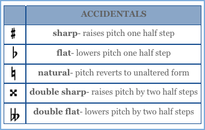
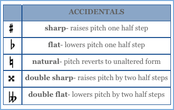
-
Alberti Bass
A broken chord accompaniment in which the notes of a triad follow a certain pattern of running eighth notes or sixteenth notes. Strictly speaking, the Alberti bass pattern is as follows: lowest pitch, highest pitch, middle pitch, repeat highest pitch. The pattern will vary in a triple meter.
The Alberti bass is common in Classical era keyboard music. It’s named after the eighteenth century composer Domenico Alberti.
Anacrusis
An unaccented pickup note or notes that precede the first downbeat of a piece. The pickup measure has an incomplete number of beats which is made complete at the end of the piece. If the pickup bar has only 1 beat, the final measure will have only 3 in a 4/4 meter.

-
Antecedent-Consequent Phrase Pair
A phrase pair in which the second phrase seems to answer a question posed by the first phrase. The open ending of the first phrase concludes with a half cadence which gives a feeling of expectation. The second phrase ending is closed, with a cadence to the tonic.
Anticipation
A nonharmonic tone that anticipates a chord change in the other voices. The anticipation is approached by step or leap and resolves when it becomes consonant with the anticipated chord change.

-
Appoggiatura
An accented dissonance that’s approached by leap (usually upward) and resolved by a step (usually downward).
Arpeggio
A broken chord whose notes are played successively in ascending or descending order. It derives from the way harpists or guitarists sound a chord by drawing a finger across the strings. Arpeggiated chords often serve as accompaniment, but they can also appear as a melodic figure.

-
Articulation
Refers to the manner in which notes are joined together and how they’re attacked.
A group of notes may be connected by a slur mark, in which case there’s no space whatsoever between them, or they may be marked staccato, which tells the performer that the notes are to be separated from one another by “air.” Articulation markings are used to specify how long or short an unslurred note is to be played: the wedge is for an extremely short note and a tenuto mark tells the performer to hold out the note as long as possible (without actually joining it to the next note).
An accent or sforzando mark instructs the performer to play the note with a strong attack.
Asymmetrical Meter
A meter that is divisible by neither three nor two,
e.g. 5/4, 5/8, 7/4.
-
Augmented
A term used to describe an interval or a chord that has the following qualities:
• An augmented interval is enlarged one half step beyond
major or perfect.• An augmented triad is built by stacking two major thirds, which produces an augmented fifth between its outer notes.
Augmented Sixth Chords
Chromatically altered chords that are built on the sixth scale degree and include the augmented sixth interval.
The augmented sixth interval is formed by lowering the sixth scale degree and raising the fourth scale degree.
The notes of the augmented sixth resolve in opposite directions to the dominant degree (the lowered sixth resolves downward by a half step, and the raised fourth resolves upward).Augmented sixth chords include the augmented sixth interval itself along with one or two additional pitches
to fill out the chord.There are four types of augmented sixth chords that can
be identified by the additional pitch or pitches used to
fill out the chord. The three most common types are
named after nationalities: the French, the Italian and the
German augmented sixth chords. The fourth type is called the double augmented sixth chord.
-
Authentic Cadence
A V-I chord change that marks the end of a phrase.
An authentic cadence is termed perfect only if the tonic is
in the upper-most voice of the resolution and both the
V and I chords are in root position. Otherwise, it’s an imperfect authentic cadence.Basso Ostinato
A repeating bass line, also know as a ground bass,
that serves as the foundation of a passacaglia or other continuous variation composition. Pachelbel’s “Canon in D” is built on an ostinato.
-
Beams
A slanted or horizontal bar that connects two or more note stems as a replacement for the flag. Beamed notes are best grouped in beats. Correct beaming makes the beat groups easier to see.
Beat
The steady pulse that underlies measured music.

-
Binary Form
A short musical form consisting of two complimentary parts. Both sections, referred to as A and B, are often repeated.
Binary form can be either simple, in which case the
A section does not return, or rounded, in which case the
A section returns either in part or in its entirety.Rounded binary form, also called minuet form, can
be represented as A|BA’ or A|BA. Though the A section returns, the piece retains its binary division. A ternary form (3 part) composition will have a more pronounced contrast, thematically or harmonically, between its A and B sections. Continuous rounded binary form is a distant relative of
the sonata form.Both simple and rounded binary forms can be either sectional or continuous. If the A section ends with a closed cadence, the form is sectional. If the A section ends with
an open cadence, it’s continuous.Blues Scale
A scale similar to the major scale but with ambiguous third and seventh degrees, which tend to be minor in melody but major in accompaniment. A blues melody often slides between the minor and major forms of the third and seventh degrees.

-
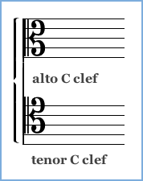
Broken Chord
A chord whose notes are played in succession (arpeggiated). A broken chord contrasts a block chord, in which all the notes are played at once. Broken chord accompaniment patterns are versatile; they can be adapted to a variety of rhythms for any meter.
C Clef
A clef used to show the position of middle C on the staff.
It’s most commonly found in the alto or tenor positions (middle line or fourth line up). The soprano, mezzo and baritone forms of the C clef are mostly of historical
interest today. -
Cadence
A chord change that marks the end of a phrase. Cadences are a form of musical punctuation; some cadences produce only a pause, while others mark a resting point or final conclusion.
Phrases with cadences ending on a chord other than
the tonic, are open ended. To close the end of a phrase,
a cadence ending on the tonic is needed.An authentic cadence can be either perfect or imperfect
(see below). The perfect authentic cadence is the most final sounding of all cadences and, therefore, the final phrase of
a period almost always ends with a PAC.Canon
A single melody composed so that it harmonizes with
itself when sung or played in strict imitation by one or more voices beginning at different times. The lead voice begins alone followed by each voice entering in succession, a set number of beats apart.A special type of canon known as a round, or circular canon, is one whose ending harmonizes with its beginning and which therefore can repeat without stopping.
“Row, Row, Row Your Boat,” for example, can continue indefinitely and often does.
 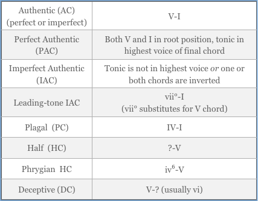
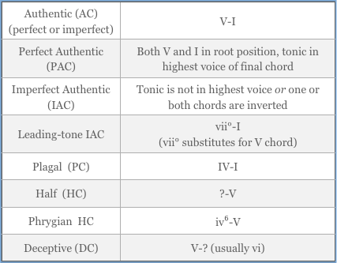
-
Chaconne
A variation form built on a repeating chord progression that accompanies a continuous flow of melodic variation.
In the time of Bach, a chaconne was characterized by a repeating chord progression in a slow triple meter.Chord Progression
A series of harmonic changes or chords, either within a
key or changing from one key to another. The strongest type of chord movement is that in which the roots of the two chords are separated by a fourth or fifth, as they are
in the tonic-dominant pair — especially a rising fourth or descending fifth. The primary triads, the tonic, dominant, and subdominant chords, share a unique and symmetrical relationship in which the tonic has the same relationship
to the subdominant as the dominant has to the tonic.
These three are the most important chords in a standard progression.Popular music is often built exclusively on the I, IV, and
V chords. The twelve-bar blues progression is a good example.
-
Chromatic
A half step in which the letter name does not change,
e.g. C to C♯.Chromatic Scale
The 12-tone scale; a scale composed entirely of half steps.
It is called chromatic because it will always include chromatic half steps.A chromatic half step is one in which both notes have the same letter name, such as C to C♯. A diatonic half step is one in which the letter name changes, such as E to F or
G♯ to A.
-
Circle of Fifths
A visual representation of the relationship between all of the major and minor keys. It can help you determine the key signature for each major key and its relative minor.
At the top of the circle is C major with no flats or sharps. Moving clockwise, each tonic rises a fifth and a sharp is added to the key signature. Going in the opposite direction from C, each tonic drops a fifth and a flat is added to the key signature.Circle Progression
A progression of chords in which roots move by ascending fourths or descending fifths (vi, ii, V, I). It’s called a circle progression because it follows the path of the circle of fifths.
As a general rule, root movement of a rising fourth or descending fifth is strong and effective and may be
repeated without limit.
-
Clef
A staff symbol that provides the key to identifying the pitches represented by each line or space of the staff.
(The word clef means “key.”) The G clef is a stylized form of the letter G and tells the position of the G above middle C. In its most common position on the second staff line it is known as the treble clef. The F clef similarly marks the position of the F below middle C, and is usually found as the bass clef, on the fourth line of a staff. The less familiar
C clef marks the position of middle C and can appear on
any line of the staff.Close Position
The voicing of a chord whose upper pitches are arranged to be as close together as possible. Contrasts with open position.

-
Closed Ending
Describes the ending of a phrase that concludes with a cadence to the tonic harmony. An open ended phrase is one that ends on a harmony other than the tonic, usually the dominant.
Coda
A concluding passage of music that extends the end of a work. (Coda means “tail.”) The instruction al coda (to the coda) tells the performer to jump to the coda marked by the coda sign.
 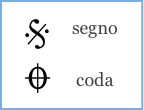
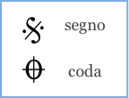
-
Compound Intervals
An interval plus one or more octaves. Adding an octave to
a simple interval leaves its quality unchanged. There are names for many compound intervals less than two octaves: a second plus an octave can be called a ninth, a third plus an octave a tenth, a fourth plus an octave an eleventh, then come the twelfth and the thirteenth. After the thirteenth we usually name the interval by its simple form.Compound Meter
Any meter in which the beat is represented by a dotted note, 6/8, 12/8, 6/4. The beat in a compound meter is divisible by three (dotted notes divide into three parts),
so the number of beats per measure is equal to the top number of the meter signature divided by 3.For example, 6/8 meter has 2 dotted quarter beats per measure, 2 groups of 3 eighth notes. (3/4 meter has the same number of eighth notes but divides metrically into
3 groups of 2 eighth notes.) Compound meters can be
duple (6/8) or triple (9/8).
-
Conjunct
Melodic movement that’s mostly stepwise. A conjunct melody is one that moves stepwise with few small leaps. The opposite of conjunct is disjunct.
Consonance
An interval or chord whose notes share one or more of
the more easily heard overtones (the lower overtones are the easiest to hear). The shared overtones lend a sense of stability to the combination that is generally associated with consonance. The consonances in order of stability are the unison, octave, fifth, major and minor thirds and major and minor sixths. “Consonance” is a relative term, as is “dissonance.”
-
Counterpoint
The art of combining two or more melodic lines so
that they harmonize with each other without losing their melodic or rhythmic independence. The term, counterpoint, comes from the Latin punctus contra punctum, meaning “point (note) against point.”Da Capo
An Italian term, abbreviated D.C., meaning “from the beginning.” Da capo al fine, abbreviated D.C. al fine, tells the performer to repeat from the beginning to the place marked fine (end).

-
Dal Segno
An Italian performance direction meaning “from the sign.” Dal segno, or D.S., instructs the performer to repeat from the segno shown here.
Diatonic
A half step in which the letter name changes, e.g. C♯ to D. All of the half steps in the major and minor scales are diatonic half steps.

-
Diminished
A term used to describe an interval that is one half step smaller than minor or perfect, or a chord that is built with a minor third and a diminished fifth. A diminished seventh chord is made with a minor third, diminished fifth, and diminished seventh.
Disjunct
Melodic movement characterized by skips or leaps rather than steps. The opposite of disjunct is conjunct.

-
Dissonance
An interval that is not acoustically stable, or which is treated as such in traditional music theory. Dissonant intervals are the seconds, sevenths, all augmented or diminished intervals, and the fourth when one of its
pitches is the bass (lowest sounding tone).Dominant
The fifth scale degree or a chord built on it. The dominant is the most important scale tone after the tonic.

-
Dominant Seventh Chord
The chord formed by adding a minor seventh to a dominant triad. The resulting chord is also known as the major-minor seventh since it consists of a major triad with a minor third above it.
In a major key no accidentals are required to write a dominant seventh chord – all four notes are natural to
the key.In a minor key the dominant chord requires an accidental to raise its third, producing a major triad with a leading tone to the tonic. The seventh is natural to the key.
Dotted Note
An augmented note value created by adding a dot at the right of a note head. A dot following a note increases the note’s value by half its original value. Dotted notes divide into three parts rather than two. For example, a dotted quarter equals three eighth notes.
A double dotted note is equal to one and three quarters
the note’s original value. The first dot adds half its original value and the second dot adds half of the first dot's value.For example, a double dotted whole note equals a whole note + a half note + a quarter note.
Dotted notes are often part of dotted pairs: a dotted note plus a short note equal to a third the dotted note’s value, such as a dotted eighth followed by a sixteenth note.

-
Double Bars
Two single bar lines, close together, used to mark the end of a section. A double bar in which the second line is heavy is used for a final ending.
Double Flat
The accidental sign that lowers a note by two half steps.
It looks like this: 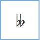
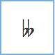
-
Double Sharp
The accidental sign that raises a note by two half steps.
Downbeat
The first beat of a measure. At the beginning of a piece
it may be preceded by an incomplete measure called the anacrusis, or the pickup beat(s). The anacrusis is an unaccented upbeat and the downbeat is the strongest
beat of each measure.

-
Duple Meter
Any meter in which the number of beats per measure is divisible by two. A duple meter can be either simple (4/4) or compound (6/8).
Duplet
A rhythmic grouping, marked with a “2,” found in compound meters where the dotted note divides into
2 equal notes instead of 3. In 6/8 meter two duplet eighth notes are played in the time normally taken by 3 eighth notes, i.e., in the time of a dotted quarter. (A duplet can also be notated with two dotted notes: e.g. 2 dotted eighth notes are equal to a dotted quarter.) -
Dynamics
A term encompassing all of the various performance indications that concern volume. Dynamics are indicated
by the abbreviations of the Italian words pianissimo,
piano, mezzo-piano, mezzo-forte, forte, fortissimo:
pp, p, mp, mf, f, ff.Gradually increasing loudness, or crescendo, is indicated
by the abbreviation cresc. Decrescendo, diminuendo, and morendo are all words for decreasing loudness. Increasing or decreasing loudness can also be indicated with the symbols below.Elaboration
Extending a melodic idea by the addition of decorative notes.
 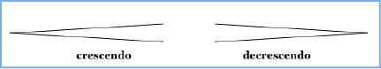
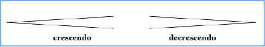
-
Enharmonic Equivalents
Two notes, intervals, or chords that are spelled differently but sound the same on the piano. Examples: F♯ and G♭, major third and diminished fourth, German augmented sixth chord and dominant seventh chord.
Escape
A nonharmonic tone that is unaccented, approached by step and resolved by leap.

-
Fermata
A symbol that extends the duration of a note or rest beyond its normal value. The exact duration of the note is up to the performer. A fermata makes a dramatic pause and can occur anywhere in the music.
Figured Bass
The former practice (also known as thoroughbass) of writing figures (numbers) under a bass line to indicate harmonies. Each number appearing with the bass line refers to an interval needed in the harmony, as measured from the bass note. Filling in the harmonies from the figures is called realizing a figured bass.
In Roman numeral analysis, numbers from the old
practice of figured bass are often used in identifying
chord inversions. A “6” added to a Roman numeral
means the chord’s third is in the bass (first inversion). “6/4” means the chord’s fifth is in the bass (second inversion). The numbers refer to the intervals that notes
of the chord form with the bass note, disregarding octaves.Figures are also used to identify the inversion of seventh chords. “7” is the root position seventh chord; “6/5” means a first inversion seventh chord; “4/3” means the second inversion, and “4/2” indicates a third inversion.

-
First Inversion
A chord whose third is in the lowest position. A “6” added to a Roman numeral indicates that a chord is in first inversion. For example, IV⁶ represents a subdominant chord in first inversion.
Flag
A symbol added to create note values shorter than a quarter note. Flags are always drawn on the right side
of the note stem whether the stem is facing upward or downward. An eighth note has a single flag, a sixteenth
has two flags and so on. Beams join flagged notes together in beat groups and are a substitute for flags. The number
of beams equals the number of flags.
-
Flat
A sign, ♭, used to lower a note one half step. A double flat lowers a note two half steps. A flat that is not in the key signature is an accidental.
Genera
In ancient Greek music theory, the three types of four-note scale patterns (tetrachords) built within the space of a fourth. The diatonic genus broke the fourth up into two whole steps (tones) and a half step. A more unusual division was the chromatic, which consisted of two half steps of different size and a minor third. The last and most exotic was the enharmonic: a major third, a half step, and
a tiny interval (smaller than a half step), called a diesis.
All these words continue to have meanings based on their original significance to the Greeks. Diatonic music is based on major or minor scales or the church modes; all of which are called diatonic because they resemble the diatonic genus above – they employ whole tones and that type of half step in which the note name changes. Chromatic music involves at least some half steps in which the note name remains the same, as in the chromatic genus. Similarly, the word enharmonic still refers to the relationship between two notes that are written differently and would in theory be separated by a diesis, and yet are played on the same key of the piano, such as E♯ and F. 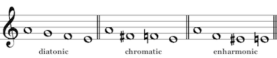
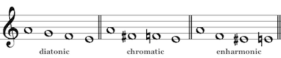
-
Grand Staff
The treble and bass clef staves joined together and used
as a pair. Piano music normally is written using the grand staff.Half Cadence
A chord change that marks the end of a phrase. A cadence to V, like I-V, is a half cadence – it leaves the listener waiting for more. It contrasts the authentic cadence of V-I.
 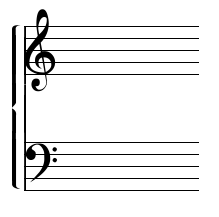
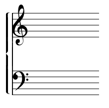
-
Half Step
The smallest possible distance between two pitches on
the piano, e.g. E-F or F♯ to G. Two half steps make a
whole step and there are twelve half steps in an octave.
In Western music, the half step is the smallest interval
used in any scale.Harmonic
Most commonly used to refer to the tone produced by stopping a string at one of its nodes, which isolates the higher frequencies that happen to divide at that point in
the string. Most common is to touch the string at its midpoint, which brings out the octave harmonic.
-
Harmonic Minor
A scale that follows the same pattern as the natural minor scale except that it has a raised seventh degree to provide a leading tone back to the tonic. The raising is always accomplished by use of accidentals; it is not indicated in the key signature.
The addition of the leading tone creates the exotic sounding augmented second interval between the sixth and seventh scale degrees. The melodic minor scale eliminates the augmented interval by raising both the sixth and seventh scale notes.
Harmonic Rhythm
The frequency of harmonic changes in relation to the beat. In popular and classical music the harmonic rhythm is usually slow, with harmony changing no more than twice a measure. A Bach chorale could be said to have a quick harmonic rhythm, since the harmony changes on nearly every beat.

-
Hemiola
A special type of syncopation that occurs in a triple meter when beats are grouped to give the impression of duple meter; for example, two measures of 3/4 time in which
you hear three groups of two beats instead of two groups
of three.Homophony
A multi-voice texture exemplified by popular song in which a lead melodic line is supported by chordal accompaniment. Homophony is also found in hymns in which all voices move in the same rhythm.

-
Imitation
A compositional device common in polyphony in which one voice imitates another.
Interval
The difference in pitch between two notes. The interval is named according to the number of scale notes it includes. Two pitches played together form a harmonic interval;
two pitches played in succession form a melodic interval.Intervals have different qualities: major, minor, perfect, augmented or diminished. An interval’s quality is determined by the number of half steps it includes.
Seconds, thirds, sixths and sevenths can be either major, minor, augmented or diminished. Fourths, fifths, unisons, and octaves can be either perfect, augmented or diminished.

-
Inversion
An interval is inverted by flipping the positions of its
notes. The interval C-E, for example, is the inversion of
E-C; e.g. a third inverted becomes a sixth. A chord is inverted if any note other than its root is in the bass.Melodic inversion is a transformation technique used by composers to develop a melodic idea. Inversion changes
the direction of each interval in the melody. A rising third becomes a descending third, a descending second becomes
a rising second. A tonal inversion, the most common, never leaves the original key and, as a result, some intervals are
a half step larger or smaller than the original. A real inversion maintains the exact intervals and soon leaves
the original key.Key Signature
A grouping of flat or sharp symbols placed at the beginning of each staff to indicate the key of the piece. The key signature tells you which notes are to be flatted or sharped throughout. Flats and sharps are always added in the same order, so a key signature with three sharps, for instance, will always indicate F♯, C♯, and G♯.
You can identify a major key from its key signature as follows:
• For sharp keys: the last sharp in the signature is the
key’s leading tone.• For flat keys: The last flat in the signature is the key’s
4th scale degree or (if there’s more than one flat) the second
to last flat corresponds to the key’s tonic.
-
Leading Tone
The seventh scale degree when it’s a half step below the tonic, as it is in the major, harmonic minor, and ascending melodic minor scales. In the natural minor scale the seventh degree is called the subtonic.
Ledger Line
A short line that extends the range of the staff upward or downward. Multiple ledger lines are used to write notes that extend far above or below the staff. Composers may opt to change clefs if too many ledger lines are required.

-
Major
A term used to describe the quality of an interval, scale
or chord.Seconds, thirds, sixths and sevenths can be either major
or minor. The major form of the interval is one half step larger than its minor form.A scale is major if its third scale degree forms a major third with its tonic. If it forms a minor third with its tonic then the scale is some variety of minor.
If the lower third of a root position triad is major then the chord is major or augmented.
Major Triad
A chord whose pitches include a major third and a perfect fifth formed with its root. When the root is the lowest pitch the triad is in root position. The triad can appear inverted, meaning that the root is not the lowest pitch. If the third is lowest, the triad is in first inversion; if the fifth is lowest it’s in second inversion.

-
Meantone
A traditional way of tuning the notes of the keyboard to make the most common thirds sound more like the acoustically exact third.
See Chapter 15, The Physics of Music.
Measure
A group of beats, commonly two, three or four beats, that fall into a pattern of strong and weak beats. The first beat of any measure, the downbeat, is the strongest. A measure line or bar line separates one measure (also called a bar) from the next.

-
Mediant
The third scale degree or the chord built on it.
Melodic Minor
An alternate form of the natural minor scale. The ascending melodic minor scale is the same as the harmonic minor except that the sixth degree is also raised, to eliminate the augmented second found between the sixth and seventh degrees of the harmonic minor. The ascending pattern of whole steps and half steps is W H W W W W H.
The melodic minor is represented as reverting to natural minor when descending, though in practice the three forms of minor are freely mixed together.

-
Meter
The repeating pattern of weak and strong beats that occurs with the division of beats into measures. The meter is indicated by a meter signature at the beginning of a piece. The meter signature (or time signature) tells us the number of beats in every measure and how many beats to give each note value.
In simple meters, like 2/2, 2/4, 4/4, and 3/4, the beat is represented by an undotted note.
In compound meters, like 6/8 or 12/8, the beat is represented by a dotted note.
Meter Signature
A representation of meter found at the beginning of a
piece or at changes of meter within the piece. The meter signature, also called a time signature, usually consists of two numbers. The lower number represents a note value, such as “4” for a quarter note or “8” for an eighth note,
and the upper number tells how many notes of that value make up a measure.For simple meters, in which the beat has the value of
an undotted note, the upper number also tells the number
of beats in a measure. For example, 4/4 has 4 beats in
a measure, each with the value of a quarter note.
3/4 has three beats and 2/2 has two beats.In compound meter the beat is divisible by three – it
has the value of a dotted note. For compound meter the number of beats per measure is actually the upper number divided by three. 6/8 meter is an example: it has two beats per measure, with each beat having the value of a dotted quarter note. The total time of the measure equals
that of 6 eighth notes.
-
Metric Accents
An accent that derives from a note's relationship to the
beat or to the subdivisions of a beat. Metric accents are more subtle than dynamic accents. They can be suggested by harmonic change or the longer duration of a note.
The first beat of any measure carries a metric accent,
and in 4/4 there is a lesser metric accent on beat 3.Metric accents within a beat follow the same principle:
if there are four equal notes in a duple meter group and
the first is on a beat, then the second note is considered unaccented, the third accented and the fourth unaccented again.Minor
A term used to describe the quality of an interval, scale
or chord.Seconds, thirds, sixths and sevenths can be either major or minor. The minor form of the interval is one half step smaller than its major form.
A scale is called minor if its third scale degree forms a minor third with its tonic; if the third is major, then the scale is major.
Similarly, if the lower third of a root position triad is
minor then the chord is minor or diminished.
-
Minor Triad
A triad formed of a minor third with a major third on top. The outer notes of the triad add up to a perfect fifth. The pitch the triad is built on is known as its root. The triad
can appear inverted, meaning that the root is not the lowest pitch. If the third is lowest, the triad is in first inversion;
if the fifth is lowest it’s in second inversion.Minuet and Trio
A compound form often found as the third movement of a sonata, symphony or string quartet. The individual dances are based on rounded binary form but the movement as a whole has a ternary form (three sections with a contrasting middle). The trio corresponds to the B part of a ternary composition. It contrasts with the minuet in both mood
and key. The minuet is usually the most vigorous and dance-like, while the trio has a more lyrical character. 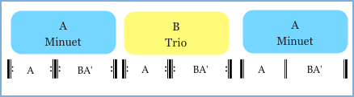
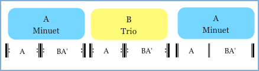
-
Modes
Scale forms dating from medieval times, often called
the Church modes. Today these carry Greek names:
Dorian, Phrygian, Lydian, and Mixolydian.
Their pattern of steps matches that of the white keys
of the piano beginning on D, E, F, and G respectively.The Aeolian and Ionian, named in the 16th century by
the theorist Glarean, correspond to our natural minor
and major scales: the patterns beginning on A and C.
A seventh mode, called the Locrian, can be built on B but lacks a perfect fifth above its tonic. Only the first six modes are treated in traditional counterpoint exercises but the Locrian is known in jazz.Modes such as Mixolydian and Dorian are still heard, particularly in folk music and jazz, but also sometimes
in composed classical works. Beethoven has a Lydian passage in his A minor String Quartet, Op. 132.Modulation
A shift in harmony that moves from one key to a newly established key. Normally this is not an abrupt change,
but is made through careful use of transition chords such
as secondary dominants. The new key may or may not be indicated by a change of key signature.Modulation usually occurs between closely related keys, allowing the shift to occur through chords that are common to both keys. This is called common-chord modulation.

-
Monophony
A single, unaccompanied melodic line. Gregorian chant is monophonic.
Motive
A short distinctive melodic-rhythmic fragment drawn from a phrase and repeated throughout a composition.

-
Natural
The accidental sign, ♮, used to naturalize a note that had been sharped or flatted.
Natural Minor
The pattern of whole steps and half steps that results
when playing the piano’s white keys beginning on A:
W H W W H W W. The natural minor scale beginning on A uses the same pitches as the C major scale but the pattern of whole steps and half steps is changed.The natural minor scale is one of three forms of the minor scale. The others are harmonic minor and melodic minor.

-
Neapolitan Chord
A chromatically altered chord consisting of a major triad built on the lowered second scale degree. It’s usually
called the Neapolitan sixth because it often appears in
first inversion (the chord’s root is a lowered sixth above
the bass). It’s common in minor keys, usually found introducing the dominant.In a minor key the Neapolitan chord will always require one accidental, a flat or a natural, on its root.
In a major key two accidentals are required: one to lower the root by a half step and another to lower the fifth.
Neighboring Tone
Also known as the "auxiliary tone," this is a nonharmonic tone approached by step and resolved by a step in the opposite direction. There are upper or lower neighbors, either accented or unaccented. The lower neighboring
tone is the more common of the two.
-
Node
One of the points of division along a vibrating string
or column of air. A string or column of air vibrates simultaneously in various divisions of its length:
the whole length, then in halves, in thirds, etc.
Each dividing point is a node. On a vibrating string, touching a node will block all the tones that do not divide at that point, making the “harmonic” more audible.
For example, touching a vibrating guitar string at its midpoint node will produce the octave harmonic.Non-Chord Tones
See Nonharmonic tones.

-
Non-Tertian Chords
Chords built from intervals other than the third. The most common of these non-tertian chords are the quartal and quintal chords (chords built from stacked fourths or fifths).
Nonharmonic Tones
Dissonant tones that are not part of the intended harmony (also known as non-chord tones). In addition to providing harmonic interest, non-chord tones are often important melodically. Non-chord tones sometimes serve to smooth the connection between chords.
Nonharmonic tones usually move by step to a note that is part of a chord. The various types of non-chord tones are identified by how they are approached, how they resolve and whether they are accented or unaccented.
Nonharmonic tones include the anticipation, the appoggiatura, the escape, the neighboring tone, the passing tone, the pedal point, and the suspension.

-
Octatonic Scale
An eight-tone nontraditional scale formed from alternating whole and half steps.
Octaves
The interval between two notes having the same pitch class, e.g. C to C. All Cs on the keyboard are octaves of each other. Raising a pitch by an octave doubles its frequency of vibration.

-
Offbeat
The weak beat or beats in a metric pattern. In 4/4 meter beats 2 and 4 are considered offbeats. Rock music and syncopated rhythms place emphasis on the offbeats. “Backbeat” is a term used by pop musicians to refer to
the weak beats.Open Ending
Describes the end of a phrase that finishes on a harmony other than the tonic, usually with a half cadence to the dominant. A closed phrase ending finishes with an authentic or plagal cadence to the tonic harmony.

-
Open Position
Describes a chord whose notes are spaced to cover a
wide range. Vocal music for mixed voices can more easily accommodate the soprano, alto, tenor and bass vocal ranges using open position chords. On the piano, open voicing may produce more clarity.Overtone
One of the component frequencies making up the complex sound of an acoustic musical tone. Especially important for music are the harmonic overtones, whose frequency is an even multiple of the fundamental frequency. “Overtone” usually refers to these harmonic overtones, while “partial” is the more general term.
A pitched tone differs from unpitched noise in that it has
a steady frequency of vibration. Naturally produced pitched tones always will be a complex in which the fundamental frequency is accompanied by harmonic overtones approximately twice that frequency, three times that frequency, and so on, which form the "overtone series."
The pitch accuracy of these overtones depends on the material producing the vibration. Overtones from an ideally thin and flexible string are mathematically exact multiples of the fundamental frequency, but a stiffer string's overtones will be somewhat distorted. Bells are
a good example of a musical instrument with noticeably distorted overtones. For the same reason, a large piano with strings that are thin in relation to their length has clearer, less distorted overtones than a short spinet piano with strings that are thick relative to their length.
-
Parallel Minor
A scale with the same tonic but a different key signature than its parallel major. The F minor scale is the parallel minor of F major – they share the same tonic, but the key signature for F minor has four flats and the key signature for F major has one flat.
Partial
A frequency component of a complex musical tone.
A naturally produced musical tone is not a single
frequency, but a composite of many partials.
The overtone, or harmonic partial, is a special class of partial whose frequency is a multiple of the fundamental
or lowest frequency.
-
Passing Tone
The most common type of nonharmonic tone.
It’s approached by step and resolved by a step in the
same direction, filling in the space between two tones to make a smooth line. It can be accented or unaccented.Pedal Point
A sustained or repeated tone that begins as a chord tone (usually in the bass) and becomes dissonant as the other parts move. It is sustained until it once again becomes consonant with the other voices.

-
Pentatonic Scale
A five note scale that follows the pattern of the piano’s black keys: W W m3 W m3. It’s like a major scale without the fourth and seventh degrees. The pentatonic also comes in minor forms, such as: m3 W W m3 W.
Perfect
The term used to describe a unison, octave, fifth or fourth that is neither augmented (larger by a half step) nor diminished (smaller by a half step).

-
Period
Two or more phrases, often four measures each, consisting of at least one antecedent (an open ended phrase) and one consequent phrase. A period always has a closed ending. Periods can be parallel or contrasting. If the phrase beginnings closely resemble each other, they form a parallel period. If the phrase beginnings are not similar,
the result is a contrasting period.Phrase
Analogous to a spoken phrase and is sometimes set off
in performance by a taking of breath or a slight pause.
In music of the common practice period, melodic phrases are symmetrical and are generally four measures long
(or two, depending on the meter).
-
Pitch Class
The set of pitches that differ only in octave. All the Cs or Fs on the keyboard share the same pitch class. The white keys of the piano keyboard include only seven pitch classes.
Polyphony
A multi-voice texture characterized by two or more melodic lines, each rhythmically independent, and arranged to work together harmonically.

-
Primary Triads
The triads built on the tonic, subdominant and dominant scale degrees. In major keys all three are major triads;
in minor keys all three are minor, but the dominant triad
is often altered to major to produce a leading tone back to
the tonic.Relative Major
The major scale that shares the same key signature with
a minor scale. The relative major of any minor scale
begins a minor third above the tonic of the minor scale.
For example, A major is the relative major of F♯ minor – both have a key signature of three sharps.
-
Relative Minor
The minor scale that shares the same key signature with
a major scale. The relative minor of any major scale
begins a minor third below the tonic of the major scale.
For example, c minor is the relative minor of E flat major – both have a key signature of three flats.Relative Motion
Describes how two voices move up or down in pitch in relation to one another. The relative motion of a pair of voices can be parallel or similar, contrary, or oblique. Contrary and oblique motion produce the greatest sense
of independence between voices; parallel motion produces the least.
-
Repeat Signs
A double bar line with two dots on the left or right.
Repeat signs can be right-facing (dots to the right side) or left-facing, or both, and can occur anywhere in the music. They usually substitute for a bar line but can occur in the middle of a measure. A left-facing repeat sign tells the performer to repeat from the previous right-facing repeat sign or the beginning of the music, whichever comes first.Repeat signs can be used with first and second endings.
The first ending includes the repeat and is only played
the first time through. The performer skips to the second ending the second time through.Resolution
The move from dissonance to consonance. A dissonant interval or chord generally resolves to a consonant one
in classical tonal music, dissipating what is meant to be perceived as the tension of the dissonance. Dissonance produces a feeling of instability, whereas consonance creates a feeling of stability or being at rest.
-
Rest
A staff symbol indicating a length of silence. For every note value there’s an equivalent rest symbol.
Retardation
A chord tone that is either held or repeated to form an accented dissonance with the following chord change. Retardation is very much like a suspension except that
the dissonance resolves upward instead of downward.
It appears frequently in cadences.
-
Retrograde
A type of melodic transformation that reverses the melody of a theme or motive. Sometimes only the pitch order is reversed; sometimes the rhythm is reversed as well.
A retrograde inversion is a variation that is both backwards and inverted.
Rhythmic Augmentation
A type of transformation in which the note values of a theme or motive are increased by the same proportion — for example, doubling their values. The Rhythmic diminution transforms by reducing values.

-
Rondo
A compositional form following the pattern ABACAD...A. Rondo form is a popular choice for the final movement
of a sonata (symphony, string quartet, concerto).
The characteristic feature of a rondo is the repeated
return of the A material, called the rondo theme.
The melodic episodes between the repeated A sections travel to other keys and provide thematic contrast.Root
For a chord, the pitch that’s in the lowest position if all
its pitches are arranged in triad order as stacked thirds.
A triad is built by forming intervals of a third and a fifth above its root tone. When the root tone is the lowest note, the chord is in root position. Whether a chord is in root position or is inverted, the root tone remains the same.
A triad is identified by its root and chord type, e.g.
“C minor.”
-
Rubato
Use of an elastic tempo for expressive purposes.
Scale
A pattern of steps for filling in the space of an octave
(from the Latin word for “ladder”). If you begin playing
the piano’s white keys from the note C, the pattern of steps is as follows: W W H W W W H, forming the familiar major scale. If you begin on the note A the pattern changes to W H W W H W W to make the natural minor scale. Scales are named by their starting note (tonic) and scale pattern, e.g. D minor or B major.The minor scale has three forms: natural, harmonic and melodic.
Other scales used in Western music include the whole tone scale, the pentatonic scale and the octatonic scale.
-
Second Inversion
The voicing of a chord that places its fifth in the lowest position.
A “6/4” added to a Roman numeral indicates that a chord is in second inversion. The figures mean that the invervals of a sixth and a fourth (not counting the addition of octaves) will be found above the bass.
Secondary Dominant
A chord that serves as the dominant to a chord other than the tonic. To function as a secondary dominant the chord must be major or altered to major, and often will have a minor seventh added as well. If a chord is altered in this way it’s referred to as “V (or V⁷) of x,” where x is the second chord with its root a fourth higher or a fifth lower than the first. The two chords mimic the relationship between the dominant and tonic.

-
Sequence
The repetition of a brief melodic idea that is transposed either up or down with each repetition. Usually it’s transposed by a second, less frequently a third.
The tonal sequence allows the quality of melodic intervals to change according to the key (i.e., it does not use accidentals to maintain the quality of each interval).
The real sequence, less common in tonal music, is an exact transposition of the original pattern and will usually require the use of accidentals.
Seventh Chord
A chord that includes the interval of a seventh with the root. Adding sevenths of different types to the basic triads produces a variety of seventh chords. The most common
is the dominant seventh chord (sometimes called the major-minor seventh). Because the interval of a seventh
is dissonant, all types of seventh chords are unstable and are used in tonal music to give a sense of motion. 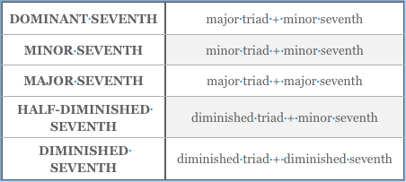
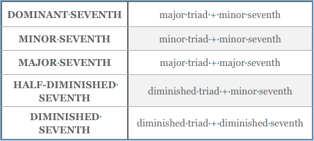
-
Sharp
A sign, ♯, used to raise a note by one half step. A sharp that is not part of the key signature is an accidental.
Simple Intervals
An interval spanning an octave or less. Intervals greater than an octave are compound intervals.

-
Simple Meter
Meters in which the beat is represented by an undotted note, e.g. 4/4, 3/4, 2/2, 3/2, 4/8 etc. The upper number of the meter signature tells us how many beats per measure, and the lower number which note value equals one beat. Simple meters can be duple (the number of beats per measure is divisible by 2) or triple (the number of beats
is divisible by 3).Sine Wave
The wave form of the simplest possible sound, which follows the mathematical curve described by the sine function. All musical tones can be analyzed as a combination of sine waves.

-
Solfège
A teaching method in which pitches are sung using the syllables do, re, mi, fa, sol, la, ti. There are two methods
of teaching solfège, fixed do and moveable do. In the
first case, the note C is always do. With the moveable do system, do will always represent the first note of the
scale (the tonic).Sonata
An instrumental work in three or four movements, usually for keyboard alone or keyboard plus a solo instrument. The movements of a sonata usually contrast in key, tempo and form. The first movement of a classical sonata is always written in sonata form. There is no prescribed form for the other movements.
Though the title “sonata” is normally used for works involving only one or two players, large scale works for other ensembles follow the same formal principles as the sonata: symphonies are essentially sonatas for orchestra; string quartets are sonatas for quartet; concertos are sonatas for a solo instrument and orchestra.

-
Sonata Form
The usual form of a classical sonata, symphony, or
string quartet (to name just a few). The sonata form is characterized by contrasting keys, contrasting themes
and thematic development. The movement begins with
a statement (exposition) followed by a departure (development) and then a return (recapitulation).The sonata form structure (A B A′) derives from
rounded binary form. The exposition presents (usually)
two contrasting themes in the tonic key and then modulates, usually to the dominant. The development section develops the thematic material presented in the exposition, and it may also modulate to a number of other keys. The recapitulation will be marked by a return to the original key and a reiteration of the themes heard in the exposition. The recapitulation finishes in the tonic key.Staff
The five horizontal lines on which notes are written in
staff notation. The lines and spaces correspond to the
white keys of the piano. 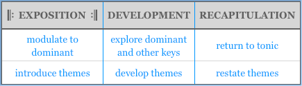
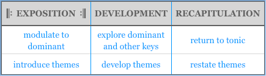
-
Subdominant
The name of the fourth scale degree or the chord built on it. It’s one of the three most important scale tones along with the tonic and dominant.
Submediant
The name of the sixth scale tone or the chord built on it.

-
Subtonic
The name of the seventh scale degree when it’s a whole
step below the tonic, as it is in the natural minor scale. Otherwise, the seventh scale degree is called the
leading tone.Supertonic
The name of the second scale degree or a chord built on it.

-
Suspension
A harmonic tone that is held or repeated to become a nonharmonic tone, or dissonance, with the following harmony. Like the appoggiatura, the dissonance occurs in
a metrically strong position and its resolution is usually downward by step. Suspensions are sometimes repeated
in sequence to form a chain of suspensions.Syncopation
An alteration of the usual metric accent. Syncopation emphasizes the offbeats, usually by beginning a note on
an offbeat or a weak beat and sustaining it over a stronger beat. Ties are frequently used to create syncopated rhythms.
-
Temperament
One of the various ways of tuning an instrument to compromise with acoustical precision. It’s not possible
to tune a piano in such a way that all its intervals are acoustically exact. “Temperaments” adjust a keyboard’s tuning to make a compromise between acoustical exactitude and the limitations of having only 12 keys per octave. “Equal temperament” is the modern standard,
in which all half steps are the same size, all major thirds
a little larger than acoustically exact major thirds, and
all fifths very slightly narrow.Tempo
Speed. A tempo marking is usually indicated at the beginning of a piece, generally with an Italian word such
as allegro (fast), adagio (slow), etc. Many Italian words used to indicate tempo also convey information about the mood: an adagio is slow but also sad.The tempo can be more precisely defined by a metronome marking which shows the number of beats per minute.

-
Ternary
A compositional form that divides into three large sections: ABA or ABA′. As with binary form, ternary form can be either sectional or continuous. If the A section is closed,
it’s sectional; otherwise it’s continuous. The more common of the two is sectional ternary.The B section of a ternary form composition contrasts the mood of the A section. The A and B sections will differ harmonically, melodically or both.
Texture
The fabric of a composition as defined by the number
of voices (vocal or instrumental) and how they interact.
A single-voiced composition has a monophonic texture. Homophony and polyphony are both multi-voice musical textures, but in polyphony each voice has rhythmic independence. A song with accompanying chords is homophonic, as is a hymn in which all voices move
with mostly the same rhythm.Orchestration, which includes the choice of instruments, their number and their voicing, can also be considered
an aspect of texture.
-
Theme and Variations
A form in which a simple theme is used as the basis of a
set of contrasting variations. The theme, often a short
well-known tune, is stated at the beginning in its simplest form and then varied repeatedly while usually remaining recognizable.The variations are separated by closures. This contrasts with the continuous variation form exemplified by the chaconne and passacaglia.
A set of variations can be the basis of an entire composition, or a movement or section of a larger
work. The second movement of a classical symphony
is sometimes in the form of a theme and variations.Third Inversion
A seventh chord voiced so that the seventh is the bass note. In figured bass, the figure 4/2 indicates a third inversion seventh chord.

-
Ties
A curved line that joins two adjacent notes of the same pitch so that they sound like one. Ties are used to join notes within a measure and they’re the only way to extend the length of a note over a bar line. Ties are also used
to create note values that can’t be made with dots:
e.g. a quarter tied to a sixteenth note. Ties are frequently used to create syncopated rhythms.Tonal Transformation
Any melodic transformation that stays within the given
key. Transpositions and inversions can be tonal or real. Tonal transformations never leave the original key and,
as a result, some intervals are a half step larger or smaller than the original.
-
Tonic
The first note of a diatonic scale or a chord built on the first degree of the scale. In traditional harmony it provides the tonal center of a composition; melodies come to rest on the tonic, and the chord built on the tonic provides a sense of completion.
Transposition
An altered version of a passage or composition that is either higher or lower in pitch. A song, for instance, can be transposed to another key so that all of its pitches are either higher or lower, making it easier to sing.

-
Triad
A three note chord built by adding a third and fifth above the root, such as F- A- C. A triad can be major, minor, augmented or diminished depending on the qualities of
its thirds.Triple Meter
Any meter in which the number of beats per measure is divisible by three. A triple meter can be either simple
(3/4) or compound (9/8).
-
Triplet
The division of an undotted note into three equal parts.
For example, a quarter note divides into two eighth notes or three triplet eighth notes played in the same time as
two normal eighth notes. A triplet grouping is marked
with a “3.”Although a triplet group is divisible by three, not every triplet group contains three notes. Triplet eighths may be subdivided into triplet sixteenths or joined together to make a quarter note (equal to two triplet eights).
Tritone
Another name for the augmented fourth interval, which is equivalent to three whole tones.

-
Tuplet
A general term for all irregular groupings where the beat
is divided into a different number of equal parts than is normal for the meter. For example, five notes played in the time of four is called a quintuplet and would be marked with the number "5" above or below the group.Voice-Leading
The art of arranging each voice of a chord so that it
moves gracefully to the following harmony. Voice-leading practices have varied in different music eras, though composers have tended to keep constant certain general principles such as economy of motion, independence of voices, and careful treatment of dissonances.
-
Voicing
The spacing, doubling, and arrangement of the notes
of a chord. Voicing may be altered without changing the harmony.Whole Note
The basic unit of rhythm in notation. A whole note is equal to 2 half notes, 4 quarter notes, 8 eighth notes, 16 sixteenth notes and so on.

-
Whole Step
The whole step (or whole tone) is an interval equal to
two half steps, e.g. E to F♯ or G to A. The major scale is made up of 5 whole steps and 2 half steps in this order:
W W H W W W H.Whole-Tone Scale
A scale composed entirely of whole steps. It has only six notes and does not have a clear tonic.